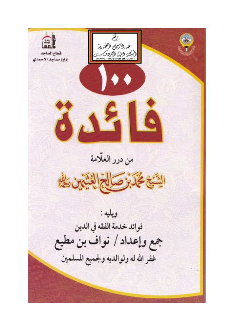

Publishers
إدارة مساجد الأحمدي
Publisher
Resources

100 فائدة من درر العلامة الشيخ محمد بن صالح العثيمين ويليه فوائد حدمة الفقه في الدين
100 فائدة من درر العلامة الشيخ محمد بن صالح العثيمين ويليه فوائد حدمة الفقه في الدين
محمد بن صالح العثيمين • نواف بن مطيع